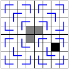

Chapter 10 Induction
Exercises Practice Problems
1. Patterns.
Use summation notation to write a formula for the \(n\)th equation for the given pattern.
- \begin{equation*} \begin{array}{ccr} 1 &=& 1 \cdot 1 \\ 1 + 5 &=& 2 \cdot 3 \\ 1 + 5 + 9 &=& 3 \cdot 5 \\ 1 + 5 + 9 + 13 &=& 4 \cdot 7 \\ \end{array} \end{equation*}Solution.\begin{equation*} \sum_{i=0}^n (4i+1) = (n+1) \cdot (2n+1) \end{equation*}
- \begin{equation*} \begin{array}{rccr} (n=2) & \dfrac{1}{1 \cdot 2} &=& \dfrac{1}{2} \\ (n=3) & \dfrac{1}{1 \cdot 2} + \dfrac{1}{2 \cdot 3} &=& \dfrac{2}{3}\\ (n=4) & \dfrac{1}{1 \cdot 2} + \dfrac{1}{2 \cdot 3} + \dfrac{1}{3 \cdot 4} &=& \dfrac{3}{4} \\ (n=5) & \dfrac{1}{1 \cdot 2} + \dfrac{1}{2 \cdot 3} + \dfrac{1}{3 \cdot 4} + \dfrac{1}{4 \cdot 5} &=& \dfrac{4}{5} \end{array} \end{equation*}Solution.\begin{equation*} \sum_{i=1}^n \frac{1}{i \cdot (i+1)} = \frac{n}{n+1} \end{equation*}
2. A Formula for a Sum.
Use induction to prove that
for all \(n \geq 0\text{.}\)
Base Case: Check for \(n=0,1,2\) to make sure you believe it. You actually only need to check for \(n=0\text{.}\) Solution.
For \(n=1\) we have \(\sum_{i=0}^{1} 2^i = 2^0 + 2^1 = 1 + 2 = 3\) and \(2^2 -1 = 4 -1 =3\text{.}\) So the statement is true for \(n=1\text{.}\)
For \(n=2\) we have \(\sum_{i=0}^{2} 2^i = 2^0 + 2^1 +2^2= 1 + 2 + 4 = 7\) and \(2^3 -1 = 8 -1 =7\text{.}\) So the statement is true for \(n=2\text{.}\)
For \(n=3\) we have \(\sum_{i=0}^{3} 2^i = 2^0 + 2^1 +2^2 + 2^3= 1 + 2 + 4 +8 = 15\) and \(2^4 -1 = 16 -1 =15\text{.}\) So the statement is true for \(n=3\text{.}\)
Inductive Hypothesis: Write down your inductive hypothesis for \(k\text{.}\) Solution.
Assume that \(\sum_{i=0}^{k} 2^i = 2^{k+1} -1\) \((\star)\)
Inductive Step: Write down what you want to SHOW for \(k+1\text{.}\) Then try to find "a copy of the size \(n\) problem" in the size \(n+1\) problem. Rearrange and use your inductive hypothesis to prove the result! Solution.
We must show that \(\sum_{i=0}^{k+1} 2^i = 2^{k+2} -1\text{.}\)
Starting with the left hand side, we have
\begin{equation*} \begin{array}{rcl} \sum_{i=0}^{k+1} 2^i &=& \sum_{i=0}^{k} 2^i + 2^{k+1} \\ &=& \left( 2^{k+1} -1 \right) + 2^{k+1} \mbox{by} \, (\star)\\ &=& 2 \cdot 2^{k+1} - 1 \\ &=& 2^{k+2} -1. \end{array} \end{equation*}
3. A Divisibility Problem.
Use induction to prove that \(4\) divides \((5^n -1)\) for \(n \geq 1\text{.}\)
Base Case: (Check for \(n=1,2,3\) to make sure you believe it. You actually only need to check for \(n=1\text{.}\)) Solution.
For \(n=1\) we have \(5^1-1=4\) is divisible by 4.
For \(n=2\) we have \(5^2-1=24= 4 \times 6\) is divisible by 4.
For \(n=3\) we have \(5^3-1=124 = 4 \times 31\) is divisible by 4.
-
Inductive Hypothesis: Write down your inductive hypothesis for \(k\text{.}\)
Pro Tip: A nice way to write "4 divides \((5^k-1)\)" is the statement "\(5^k-1 = 4r\) for some \(r\text{.}\)" Solution.
Assume that \(5^k-1= 4r\) for some integer \(r\text{.}\)
-
Inductive Step: Write down what you want to SHOW for \(k+1\text{.}\) Then try to find "a copy of the size \(k\) problem" in the size \(k+1\) problem. Rearrange and use your inductive hypothesis to prove the result!
Hint: For this problem, the easiest thing to do is "add 0 in a smart way." Namely, add \((5^k - 5^k)\) and then rearrange. Solution.
Use \((\star)\) to show that \(5^{k+1}-1= 4\ell\) for some integer \(\ell\text{.}\)
Using the hint, we have
\begin{equation*} \begin{array}{rcl} 5^{k+1}-1 &=& 5^{k+1}-1 + 5^k - 5^k \\ &=& (5^{k+1} - 5^k) + (5^k-1) \\ &=& 5^k(5-1) + (5^k-1) \\ &=& 5^k \cdot 4 + (5^k-1) \\ &=& 5^k \cdot 4 + 4r \mbox{by } (\star) \\ &=& 4 (5^k + r) \end{array} \end{equation*}and so \(5^{k+1}-1\) is divisible by 4. (Namely: \(5^{k+1}-1 = 4 \ell\) where \(\ell = 5^k + r\text{.}\))
4. Tiling with \(L\)-Shaped Triominos.
An \(L\)-shaped triomino is a \(2 \times 2\) tile with one square missing. It looks like this:

Consider the following \(4 \times 4\) checkerboards with one square missing (shown in black). For each board, show that you can cover the rest of the squares using \(L\)-shaped triominoes.
Solution.

Now consider the following \(8 \times 8\) checkerboard with one square missing (shown in black). Show that you can cover the rest of the squares using \(L\)-shaped triominoes as follows (and shown in the right diagram below). (1) Place your first triomino in the gray squares as shown. (2) Use part (a) to fill in the four \(4 \times 4\) sub-boards.
Solution.Reflect on how you solved the \(8 \times 8\) problem by turning it into four instances of \(4 \times 4\) problems. Then go back to your answers in part (a) and show how you solved each \(4 \times 4\) problem by turning it into four instances of \(2 \times 2\) problems. Solution.
By splitting the board down the middle (both horizontally and vertically), we now have the option to think of this one board as four independent boards. In particular, if we place a triomino in the middle so that it has one square in each of the three smaller boards that have one missing square, then we end up with 4 independent instances of \(4 \times 4\) boards.
If I gave you a \(16 \times 16\) checkerboard with one square missing, could you cover the rest with \(L\)-shaped triominoes? How would you do it? Solution.
Draw horizontal and vertical lines that split the \(16 \times 16\) boards into 4 separate \(8 \times 8\) board. Now place a triomino in the middle so that it has one square in each of the three boards that are not missing a square. Now we have 4 independent \(8 \times 8\) boards, all missing one square. We can cover each of those by triominos, as decribed in the previous section.
-
Use induction to prove the following statement:
For \(n \geq 1\text{,}\) any \(2^n \times 2^n\) checkerboard with one square missing can be covered by \(L\)-shaped dominoes.
Base Case: What is your base case? Solution.
A \(2 \times 2\) board missing a square is a trionimo. So of course we can cover it with one triomino.
Inductive Hypothesis: State your inductive hypothesis for \(k\text{.}\) Solution.
Assume that any \(2^k \times 2^k\) board that is missing one square can be covered by triominoes. \((\star)\)
Inductive Step: Write down what you want to SHOW for \(k+1\text{.}\) Then try to find "a copy of the size \(k\) problem" in the size \(k+1\) problem. Rearrange and use your inductive hypothesis to prove the result! Solution.
Use \((\star)\) to prove that any \(2^{k+1} \times 2^{k+1}\) board that is missing one square can be covered by triominoes.
By splitting the board down the middle (both horizontally and vertically), we now have the option to think of this one board as four independent \(2^k \times 2^k\) boards. In particular, if we place a triomino in the middle so that it has one square in each of the three smaller boards that have no missing square, then we end up with 4 independent instances of the problem using \(2^k \times 2^k\) boards (each missing one square).
By \((\star)\text{,}\) we can cover each of these four boards using triominoes. When we put them all together, we get a covering of the \(2^{k+1} \times 2^{k+1}\) board that is missing one square.
5. Nearest Neighbor Pie Fight.
Consider a pie fight between an odd number of people in which everyone throws a pie at her nearest neighbor. Assume that all pairwise distances are distinct. Prove that in such a pie fight between \(2r+1\) people with \(r \geq 1\text{,}\) there is at least one person who is not hit by a pie.
Base Case: (Check for \(r=1\text{.}\)) Hint: Start by considering the two people who are the smallest distance from one another. Solution.
Consider a pie fight between \(2 \cdot 1 + 1=3\) people. Let Alice and Bob be the two people separated by the minimum distance. Alice and Bob throw pies at each other. This means that the third person is not hit by a pie.
Inductive Hypothesis: Write down your inductive hypothesis for \(k\text{.}\) Solution.
Assume true for \(k\text{.}\) That is, assume that in a pie fight between \(2k+1\) people, there is at least one person who is not hit by a pie.
-
Inductive Step: Write down what you want to SHOW for \(k+1\text{.}\)
As in your base case, start by considering the two people (Alice and Bob) who are the smallest distance from one another. There are 2 cases to consider
Case 1: Suppose that someone else throws a pie at Alice or Bob. In this case, you can immediately find a person who is not hit by a pie. Why?
Case 2: No one else throws a pie at Alice or Bob. In this case, you need to use the induction hypothesis!
Show that in a pie fight between \(2(k+1)+1=2k+3\) people, then there is at least one person who is not hit by a pie.
Consider a pie fight between \(2(k+1)+1 =2k+3\) people. Again, let Alice and Bob be the two people separated by the minimum distance. There are two cases.
Case 1: No one else throws a pie at Alice or Bob. Excluding Alice and Bob, we have a pie fight between \(2k+1\) people. By induction, there is at least one person who is not hit by a pie.
Case 2: Someone else throws a pie at Alice or Bob. Excluding Alice and Bob, there are \(2k\) pies left to be thrown, and \(2k+1\) people. Therefore at least one person is not hit by a pie.